Scouting Trip 2026
Documenting the Bortle Light Gradient
This spring, your generosity sent me west — from the most light-polluted night skies of Las Vegas through Death Valley and into the Eastern Sierra, scouting what will become Pomfret’s most ambitious astronomy expedition since Chile 2012.
What follows is a report from the field. The skies are as dark as the maps promised — in some places, darker. When students follow this route in March 2027, they’ll see something 80% of Americans have never seen from where they live.
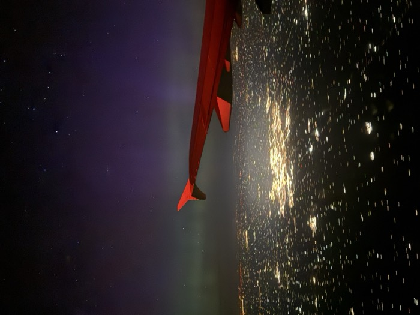
Three sites, four nights — evaluating each location for sky darkness, photography potential, safe access, and the kind of visual drama that makes a place worth the drive.
Here's what we found.
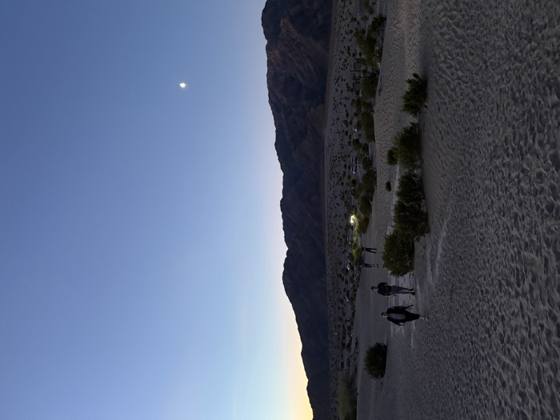
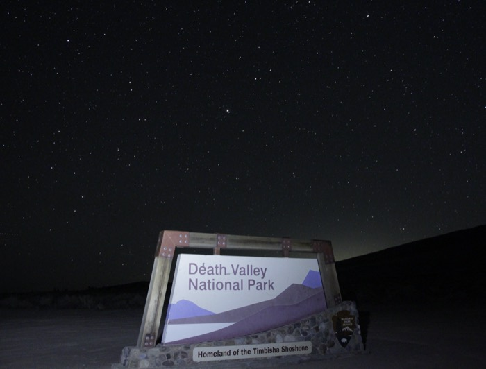
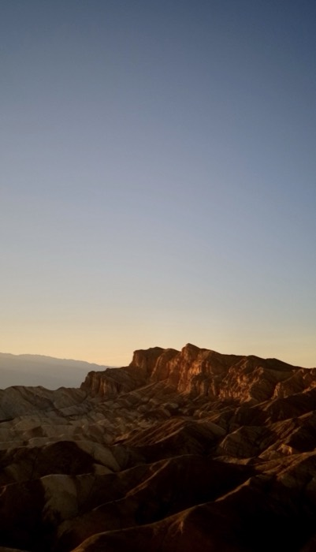
This Experiential Education opportunity is built around a deceptively simple idea: the Bortle Scale — a nine-point measure of night sky brightness, from the washed-out glow above a city center to a sky so dark the Milky Way casts a visible shadow. Every stop on this expedition is a measurement. Every night is a data point.
Glowing = sites confirmed on the scouting trip · 9 = Las Vegas (start) · 2 = Alabama Hills · 1 = Death Valley
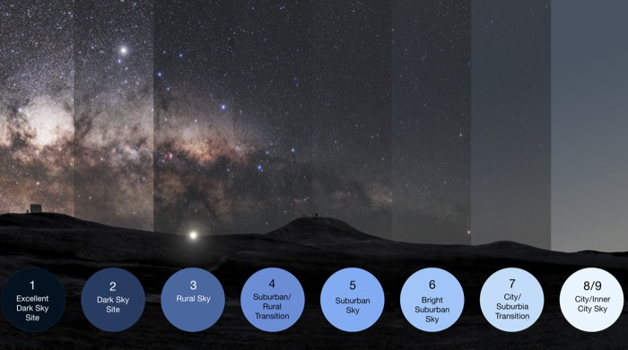
Same sky. Nine different darknesses. Left = Bortle 1 (pristine). Right = Bortle 8/9 (city).
More than 80% of Americans have never seen the Milky Way from where they live. The dark zones of the American West are among the last places on the continent where truly dark sky is still accessible by car — and they're shrinking.
Students on this trip aren't just stargazing. Each night is a lab: measuring how light pollution degrades the data, limits what the instruments can detect, and narrows what the human eye can see.
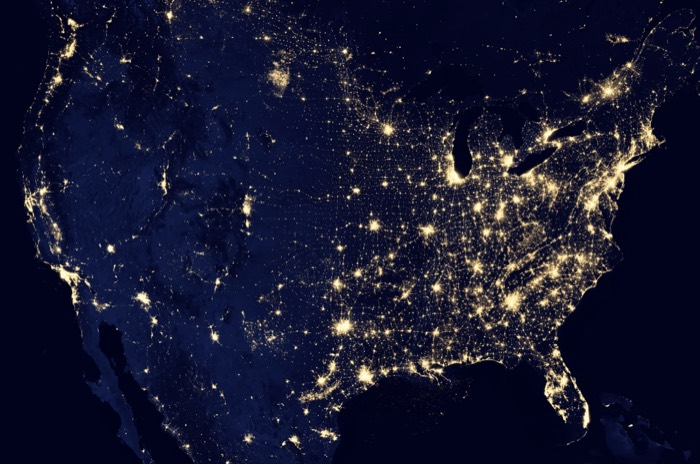
Honors Astronomy is a year-long course built around this expedition. In fall, students study our local solar system. Winter turns to deep-sky objects. Spring is cosmology — and by then, students have gathered the data themselves.
Along the way, they follow a Bortle gradient from the California coast through Los Angeles, into the mountains, and out to Alabama Hills and Death Valley. They visit Mount Wilson to stand where Hubble made his paradigm-shifting discoveries. They measure sky brightness at every stop. They do astrophotography in progressively darker skies. The final term is built on what they bring back: astrometry, variable stars, asteroid tracking, exoplanet data — all from their own observations in the field.
The class is equipped with a set of smart telescopes — a ZWO SeeStar S30 Pro and two DwarfLabs units (a Dwarf3 and a Dwarf Mini, with more planned for next year) — alongside DSLR cameras on tracking mounts and a 360° camera for night timelapses and star trails. Modern digital astrophotography has put incredibly sensitive tools in the hands of our students.
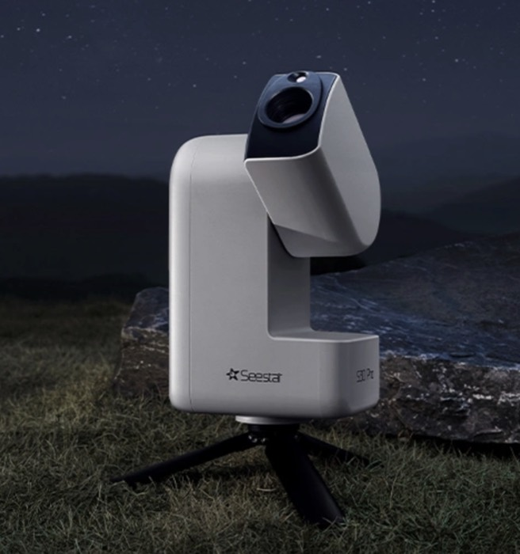
ZWO SeeStar S30 Pro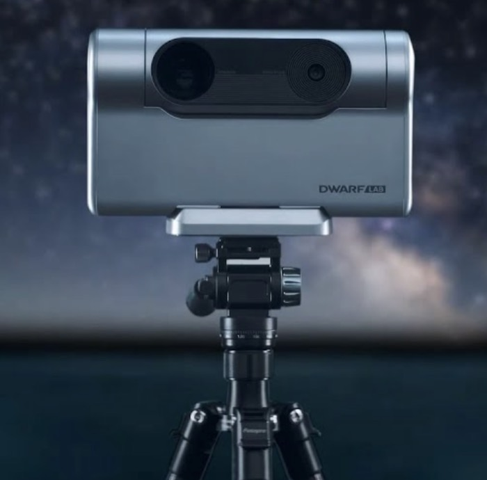
DwarfLabs Dwarf3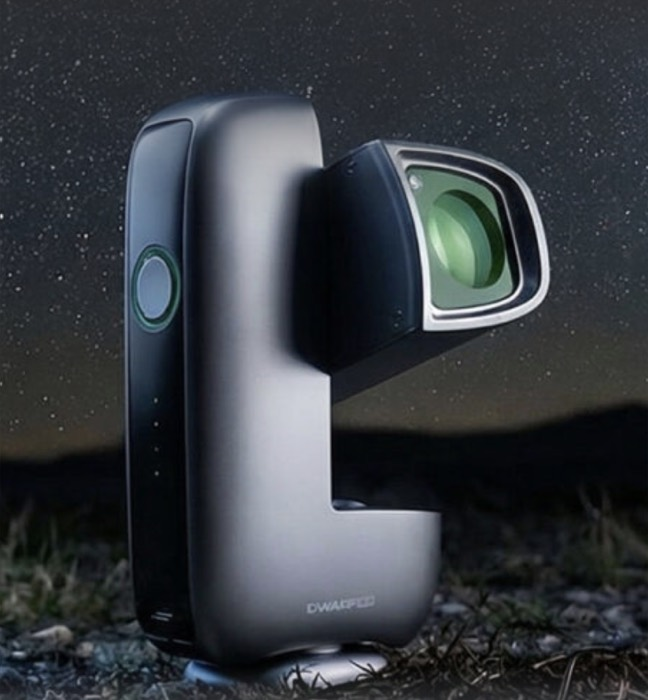
DwarfLabs Dwarf MiniZWO SeeStar S30 Pro, DwarfLabs Dwarf3, Dwarf Mini. Each unit is camera, mount, GPS, and processor in one backpack-sized instrument. Setup: under three minutes, no alignment required.
A galaxy that required hours of darkroom exposure in 1967 appears on a student's phone inside five minutes — live, stacking in real time as the sky gets darker.
Tracked DSLR mounts for long-exposure astrophotography alongside a 360° camera capturing full-dome timelapses and star trail sequences at each site.
Handheld SQMs at every site produce a calibrated dataset from Bortle 9 to Bortle 1. The signal-to-noise degradation as Bortle rises is visible in the numbers, quantitative and lab-ready.
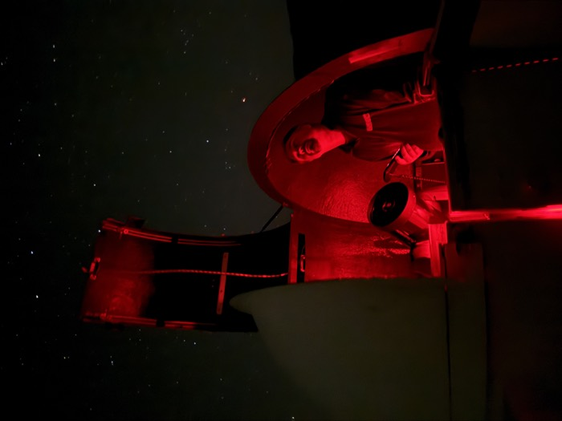
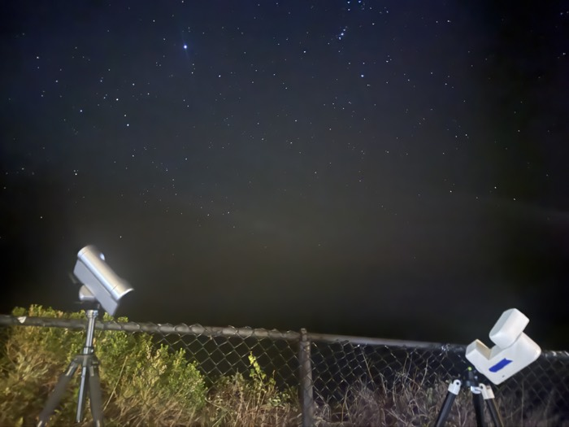
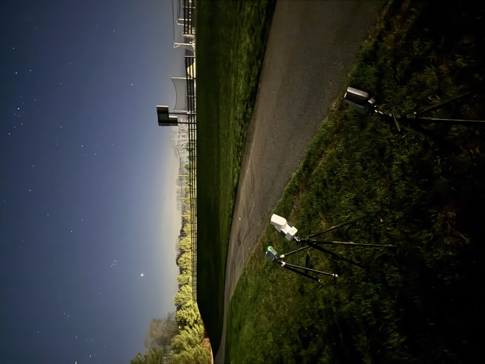
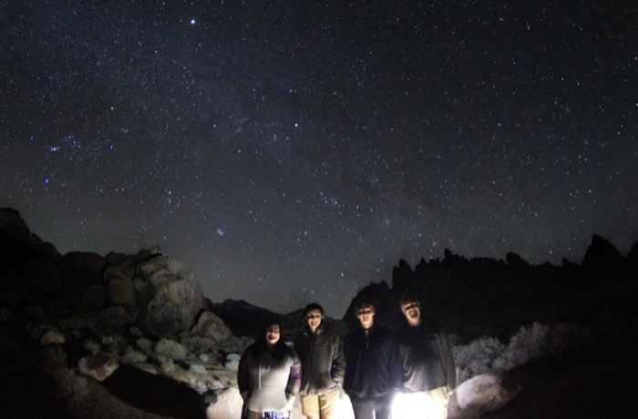
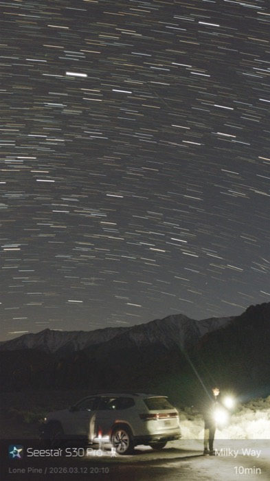
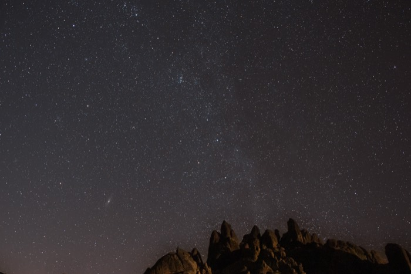
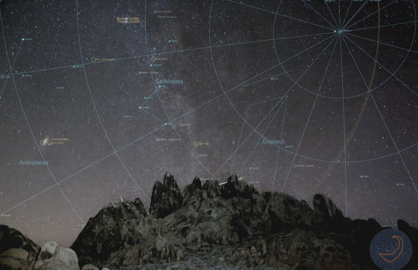
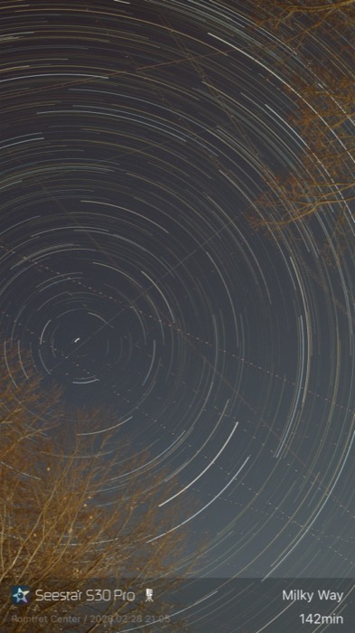
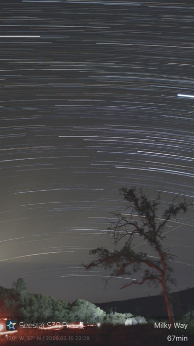
"The scouting trip was a complete success! In March 2027, the Honors and Advanced Astronomy students will have an unforgettable experience."
Dark Skies of California · March 2027
10–12 Students · Grades 10–12 · Pomfret School